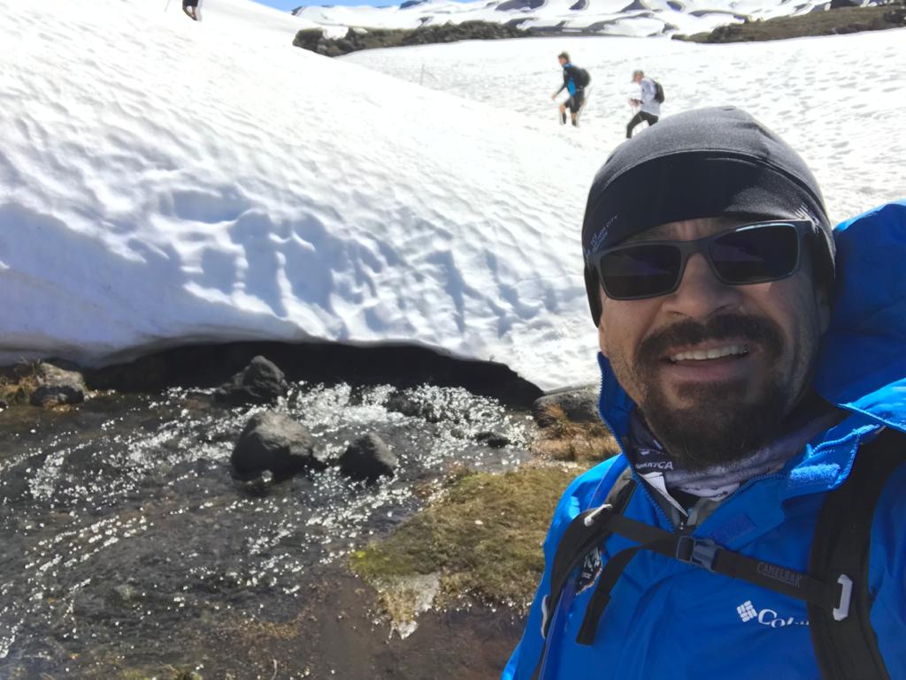
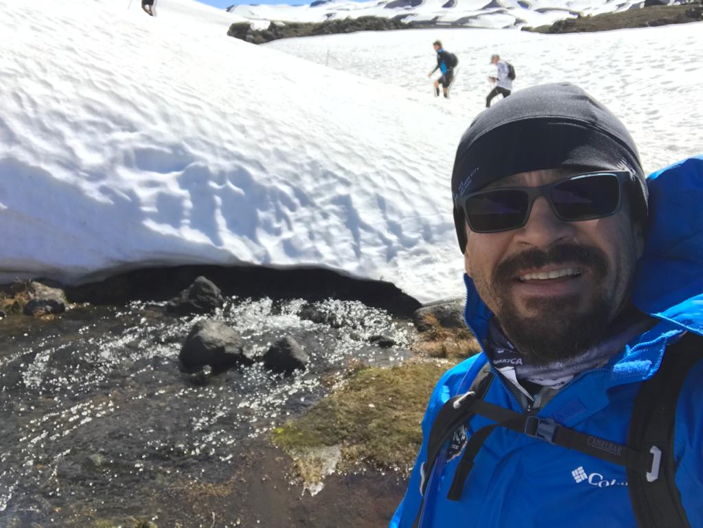
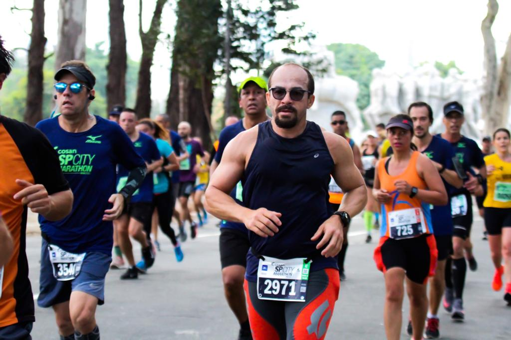
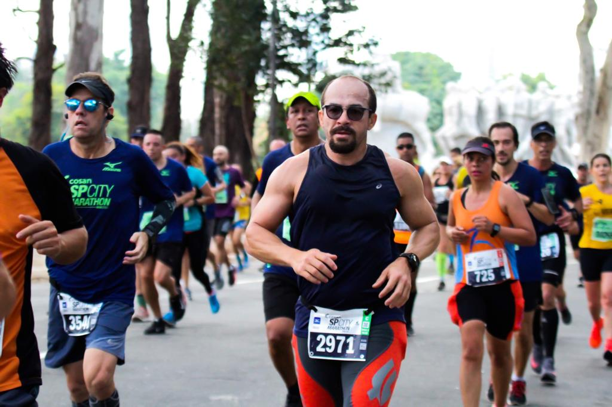

Mauris vulputate egestas bibendum. Pellentesque non nulla sodales, cursus arcu id, commodo nibh. Etiam vel diam sit amet est gravida facilisis. Ut lacus nunc, lacinia quis consequat eu, sollicitudin quis elit. Curabitur eget maximus nisl. Vestibulum ante ipsum primis in faucibus orci luctus et ultrices posuere cubilia curae; Sed a nisl non turpis auctor semper vel sit amet risus. Integer vitae neque finibus, consequat libero a, mollis risus. Duis pellentesque mollis fermentum. Aenean dapibus nibh eu volutpat posuere. Etiam quis eros nec neque dictum aliquet sit amet nec massa. Quisque ultricies iaculis nunc. Morbi turpis arcu, dignissim mattis lorem ut, aliquet blandit dui. Fusce libero ante, sollicitudin vitae elementum ac, volutpat vel felis. Vivamus at suscipit elit. Sed congue lorem non tellus feugiat, tristique fringilla felis lacinia.
Praesent non aliquam magna, lacinia eleifend orci. Donec vulputate, ipsum in dignissim elementum, libero justo bibendum neque, a gravida urna orci sed dui. Cras placerat pellentesque leo, elementum euismod nisi. In accumsan, lorem eget consectetur vulputate, orci velit tempus eros, quis eleifend est ex vitae risus. Curabitur interdum euismod tellus in elementum. Vivamus rhoncus imperdiet dignissim. Nunc consequat pellentesque metus. Nulla tempor purus quis turpis molestie luctus. Aliquam malesuada, sem vitae bibendum euismod, purus arcu faucibus dolor, id egestas quam justo at purus.

 


 
